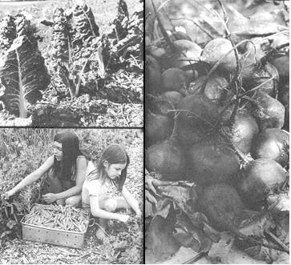

LEFT ABOVE: Keep rows of Swiss chard mulched with leaves, wood chips?even old newspapers? and you'll harvest the plant every two weeks or so all summer and fall. We freeze leaves and stalks separately. Use the leaves like spinach and substitute the stalks for celery in stews, soups, Chinese food... or cream like asparagus. Ummh good! LEFT BELOW: Note the wood chips used as mulch between rows of heavy yielding Progress #9 peas. It helps the soil retain moisture and encourages vines to yield more of their quality, giant produce. I start melon and squash plants in peat pots or pellets and set them in hills up cord down the wide mulched middles of the pea rows before the first crop has quit producing. Handled this way, the melons and squash bear before fall frosts. RIGHT: These juicy, unscarred Early Wonder beets were grown in the middles of the wide rows required for potatoes. They matured in only 50 days. Harvest the beets first. then come back later and dig potatoes from the same ground Light rainfall has minimum effect on this doublecrop combination: the potato foliage shades the beets from the sun and hot summer winds.